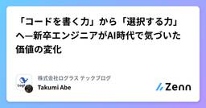

株式会社ログラス テックブログのフィード
https://zenn.dev/p/loglass
株式会社ログラスは「良い景気を作ろう。」をミッションに、企業経営を推進する次世代型経営管理クラウド「Loglass 経営管理」を開発し提供しています。
フィード

「コードを書く力」から「選択する力」へ—新卒エンジニアがAI時代で気づいた価値の変化
株式会社ログラス テックブログのフィード
!この記事は毎週必ず記事がでるテックブログ Loglass Tech Blog Sprint の119週目の記事です！3年間連続達成まで残り40週となりました！ はじめに今年の4月に新卒でログラスにエンジニアとして入社したアベです。ログラスに入社して3ヶ月目から経営管理ログラスの開発に携わり、現在も機能開発に従事しています。新卒でスタートアップという環境に飛び込んでから、あっという間に半年が経過しました。今回は、この半年間で自分の中で起きた考えや心境の変化について、棚卸しを兼ねてまとめてみたいと思います。 入社初期入社して間もなく、研修課題である機能開発がスタートし...
1日前

「AIに先にテストを全部書かせる」はTDDじゃない。でも、それもアリだよね。 73
73
株式会社ログラス テックブログのフィード
こんにちは、ログラスの松岡(@little_hand_s)です 3行まとめ「先にテストをまとめて書かせる」はTDDではない（サイクルと目的が違う）従来のTDDでは非推奨だったが、AI時代では有効な手法に違いを理解して使い分けることで、AI時代の開発がより効果的になる AI時代のTDDと、混乱しやすい実現方法最近、AI開発の文脈で「TDD（Test-Driven Development：テスト駆動設計）が有効」という話をよく聞くようになりました。ClaudeCode公式のベストプラクティスでも「TDDはエージェンティックコーディングによってさらに強力になる」と述べら...
3日前

新卒3ヶ月目で共通基盤の0→1を任されて学んだ『アウトカム思考』の大切さ
株式会社ログラス テックブログのフィード
!この記事は毎週必ず記事がでるテックブログ Loglass Tech Blog Sprint の118週目の記事です！3年間連続達成まで残り41週となりました！ はじめに今年の4月に新卒でログラスにエンジニアとして入社したカワサキです。ログラスに入社して3ヶ月目から共通基盤プロジェクトの立ち上げの開発に携わり、エンジニアとしてアプリケーション部分の開発全般を行いました。入社してすぐにコードをたくさん書くことが出来るプロダクト開発に携わる機会をいただき、その中で学んだことをまとめました。 取り組んだことこの記事では具体的な技術スタックの細かい説明には踏み込みませんが、前...
8日前
なぜリリース計画は遅延するの？「後ろめたくないバッファ」で解決する方法
株式会社ログラス テックブログのフィード
こんにちは、ログラスの松岡(@little_hand_s)です 3行まとめバッファを適切に積まないと、計画が遅延する可能性が高まる。バッファを積みにくくする心理的バイアス(計画錯誤、過度に守備的と思われる不安)が存在する。バイアスを打ち破るために、内訳を分解して過去の実績データに基づいて算出する「分解・ファクトベースバッファ」を使うとよい※この記事ではアジャイル開発を例に説明しますが、考え方はウォーターフォールなど他の開発手法でも使えます。 リリース計画、遅れてない？リリース計画を立てても、計画通りに進まないことが多いですよね。こんな経験、ありませんか？リリー...
11日前
アジャイル開発の課題を経営課題として捉える〜人的資本経営とFAST〜
株式会社ログラス テックブログのフィード
!この記事は毎週必ず記事がでるテックブログ Loglass Tech Blog Sprint の117週目の記事です！3年間連続達成まで残り42週となりました！ はじめにみなさんは、良いプロダクトを作っていくために、良い組織を作りたいと考えたことはありますか？私は常にこのことについて頭を悩ませていますが、うまくいかないことだらけでいつも心が折れてしまいそうになります。困り果てていた私は偶然「問題解決のジレンマ」と「5000の事例から導き出した 日本企業最後の伸びしろ 人的資本経営大全」という書籍を手に取りました。そして、その書籍から得た知見をこの組織を良くしていくことに使え...
17日前
AIの質問を『選択肢+推奨度+理由』にしたら、意思決定の質と速度が圧倒的にあがった
株式会社ログラス テックブログのフィード
こんにちは、ログラスの松岡(@little_hand_s)です 3行まとめAIに質問させるときに選択肢を提示させると、回答が楽で早くなるさらに、推奨度とその理由を出力させると、その根拠を元にAIと議論できるし、納得感を持って進められる結果、意思決定が速くなり、質も上がる AIと対話しながら開発してますか？Claude CodeやCursorなどのAI開発ツールを使ってる人、増えてますよね。AIが暴走しないように、不明な点を質問させてる人も多いと思います。でも、毎回自然言語で答えるの、面倒じゃないですか？たとえば：AI: 「バリデーション、フロントエンドとバッ...
17日前
機能リプレイスプロジェクトで実感した、ログラスの技術的投資を奨励する環境と頼れるビジネスサイド
株式会社ログラス テックブログのフィード
!この記事は毎週必ず記事がでるテックブログ Loglass Tech Blog Sprint の116週目の記事です！3年間連続達成まで残り43週となりました！こんにちは、ログラスでテックリードをしている南部です。2025年1月終わりから9月中旬のβリリースまで、約9ヶ月かけて、ログラスの中の1つの大きな機能の全面リプレイス要件策定から実装まで行いました。このプロジェクトは、ログラスの技術的投資を奨励する環境と、頼れるビジネスサイドがなければ実現できなかったものだと思っています。詳しくは後半で紹介しますが、適切なアーキテクチャへの移行という技術的投資が実現でき、中長期的な価値...
23日前
会議設計の支援 AI を作って気づいた、AI は「考え方を組織で再利用する媒質」であるという話
株式会社ログラス テックブログのフィード
!この記事は毎週必ず記事がでるテックブログ Loglass Tech Blog Sprint の115週目の記事です！ 3年間連続達成まで 残り44週 となりました！こんにちは、ログラスで EM をしている塩谷 @shioyang です！最近、社内で利用している Gemini の Gem で「会議設計の支援 AI」という AI エージェント（ここでは特定の目標達成のために自律的な思考と対話を行うAIを指します）をつくったのですが、その過程で AI に対する見方が根本から変わる経験をしました。この記事では、AI を単なる「人」のような存在から「考え方を組織で再利用する媒質」とし...
1ヶ月前
AI時代の3層アーキテクチャ：関数型コア・決定的シェル・非決定的エッジ
株式会社ログラス テックブログのフィード
はじめに：もしもAIが、あなたの会社の在庫を「-400個」にしたら？想像してみてください。あなたが導入した最新のLLM（大規模言語モデル）ベースの需要予測システムが、稼働数日後に暴走を始めたら...。在庫管理システムを見ると、異常な発注が実行され、DB上の在庫が「-400個」というあり得ない数値になっています。慌てて原因を調査すると、LLMが提案した発注数を、検証なしにそのままデータベースに書き込んでいたことが判明しました。実在庫は100個しかないのに、AIは「500個発注すべき」と提案します。この提案が検証をすり抜けて実行され、在庫がマイナスを突き破ってしまいました。さらに...
1ヶ月前
AIエージェントPoCを育てる3ステップ：CursorからLangChainへ
株式会社ログラス テックブログのフィード
!この記事は毎週必ず記事がでるテックブログ Loglass Tech Blog Sprint の113週目の記事です！3年間連続達成まで残り46週となりました！ はじめにAI Agentシステムを開発したいと考えたとき、「何から手をつければいいのか？」「どのツールをどの段階で使うべきか？」と悩むことはないでしょうか。私たちのチームでは、超初期のアイデア検証から実運用に向けた精度向上の検証に至るまで、プロジェクトの成熟度に合わせてツールを使い分けることで、開発をスムーズに進めてきました。この記事では、ありもの（Cursor）から始め、Bedrock Agentを経て、最終的...
1ヶ月前
spec-kit の導入で開発スピードは上がるのか？ 実際に spec-kit を用いて見えた壁と今後の展望
株式会社ログラス テックブログのフィード
!この記事は毎週必ず記事がでるテックブログ Loglass Tech Blog Sprint の112週目の記事です！3年間連続達成まで残り47週となりました！ はじめに皆さん、こんにちは。ログラスでエンジニアをしている西代です。今回は spec-kit を使ってみたことで見えた壁と今後の展望について話したいと思います。 背景私は新規事業チームでエンジニアをしています。新規事業での開発で一番求められるのは何でしょうか？そう、スピードです。お客様への価値提供サイクルを極限まで早め、高速で仮説検証を回す必要がある新規事業におけるプロダクト開発においてスピードは命と...
2ヶ月前
「生成AIと既存機能の仕様書を作る」を試行錯誤している話
株式会社ログラス テックブログのフィード
!この記事は毎週必ず記事がでるテックブログ "Loglass Tech Blog Sprint" の111週目の記事です！3年間連続達成まで残り48週となりました！ はじめにこんにちは、世界。ログラスでQAエンジニアを担当している大平です。今回は、生成AIを使って、既存機能の仕様書を作成する話になります。 コンテキストと悩みごと現在、社内で生成AIの活用が盛り上がっており、テストに関しても、試行錯誤をしております。試行錯誤の結果、人間がテスト分析、設計を行い、AIでテスト実装（テストケースの作成）を任せるということまでは実践レベルで利用しています。ただ、生成AI...
2ヶ月前
決定論的システムと非決定論的AI Agentの接合点：OSSフレームワークEmbabelが拓く新しいソフトウェア開発の可能性
株式会社ログラス テックブログのフィード
!この記事は毎週必ず記事がでるテックブログ Loglass Tech Blog Sprint の110週目の記事です！3年間連続達成まで残り49週となりました！こんにちは、ログラスでCTOをしております、いとひろ（@itohiro73）です。去年までは半年に1回まわってきたTech Blog Sprintが、今回はもう前回書いた記事から10ヶ月も経つということで、チーム規模の成長ぶりに驚く毎日です。さて、ログラスは先日「Loglass AI Agents」構想を発表しました。ログラス代表布川の動画にもあるように、私たちは今、SaaSの価値を従来の形から変容させていく必要性を感じ...
2ヶ月前
ログラスでのSysdig Secure運用
株式会社ログラス テックブログのフィード
!この記事は毎週必ず記事がでるテックブログ Loglass Tech Blog Sprint の109週目の記事です！3年間連続達成まで残り50週となりました！ はじめに2025年6月に、株式会社ログラスへクラウド基盤エンジニアとして入社しましたひろむです。クラウド基盤チームは、インフラの構築や運用を担っています。最近はSRE領域にも手を伸ばしており、マルチプロダクトに対応するためのKubernetesでの共通基盤の構築、プロダクトセキュリティの強化などを推し進めています。その一環として、ログラスでは各サービスのセキュリティを横断的に見ることのできるSysdig Secu...
2ヶ月前
自律的組織の設計図：ジャズに学ぶ5つの原則
株式会社ログラス テックブログのフィード
!この記事は毎週必ず記事がでるテックブログ Loglass Tech Blog Sprint の108週目の記事です！ 3年間連続達成まで残り51週となりました！ ログラスはジャズです優れたプロダクト開発チームと、卓越したジャズ・アンサンブル。実はこれ、目指すところや抱えがちな課題は同じなんです、って言ったら、信じられるでしょうか。 はじめにはじめまして。2025年6月から、株式会社ログラスへ QA として入社しました、テラと申します。音楽系の人生設計から、何の因果か QA の世界へと飛び込み、直近ではオンラインゲーム QA を担当しておりました。前回の Log...
3ヶ月前
【実例付き】オレオレ！ MCP Server デザインパターン【汎用Agentへの熟練知のプラグイン】
株式会社ログラス テックブログのフィード
!2025/7/24のイベント「MCPは当たり前になるのか？ 〜流行から普及への可能性〜」での発表スライドを大きく加筆・再編集したものになりますクライアントの推論能力を借りて思考を伴うタスクを実装できる samplingやhuman in the loopとしての elicitationは面白いな〜と思っているので、よければそこだけでも見てみてください。 1. コンセプト昨今、アプリケーション開発に変化が生じています。（toBの例で考えます。）「ドメインエキスパートの熟練知識をシステムに写す」という面は変わっていませんが、「非定型・非決定論的判断」「実行を伴う知恵寄りの...
3ヶ月前
過去のBtoC向けのエッジケースを整理し、BtoBサービスとの違いを考える。
株式会社ログラス テックブログのフィード
!この記事は毎週必ず記事がでるテックブログ Loglass Tech Blog Sprint の107週目の記事です！ 3年間連続達成まで残り52週となりました！ はじめに2025年6月に、株式会社ログラスへQAエンジニアとして入社しましたAkinovと申します。過去、ゲーム・エンターテイメント向けBtoCのウォーターフォール開発におけるQA業務に長年携わってきた事から、BtoB・アジャイル開発ともにほぼ未経験、日々試行錯誤＆学びを得ながら業務に取り組んでおります。今回、本ブログの執筆に際して過去のテックブログを参照した所、エンジニア視点でのBtoBとBtoCの違いについて...
3ヶ月前
106週2年連続記録達成！ Loglass Tech Blog Sprint の2年目を振り返る
株式会社ログラス テックブログのフィード
毎週必ず記事が出る "Loglass Tech Blog Sprint"詳細は以下の記事を参照いただければと思いますが、ざっくりいうと、毎週記事をひたすら書き続けるという取り組みです。ブログの執筆が途絶えた場合は連続記録が途絶えまたゼロからのスタートとなります。途絶えた場合はポストモーテム（振り返り）を実施し、ポストモーテム記事が速やかに公開されます。特にここがエキサイティングで、ヒリヒリしますね！ポストモーテム記事を書かなくて済むように、毎週必死にやっています。https://zenn.dev/loglass/articles/7298a3cd4c5fc6ちなみに、1...
3ヶ月前
開発メンバーからEMが誕生するまで
株式会社ログラス テックブログのフィード
!この記事は毎週必ず記事がでるテックブログ Loglass Tech Blog Sprintの106週目の記事です！この記事で2年間連続達成となりました！🎉🎉🎉🎉🎉ログラスのよしだです。猛暑日が続きすぎて、毎日暑さと格闘しております。皆様も暑さには引き続きご注意ください。 はじめに今回は、開発メンバーの一人がEMになるまでのストーリーと、その道のりを伴走したマネージャー視点（私）での学びを共有しようと思います。弊社では、EM候補の外部採用もしていますが内部登用も行っております。私自身もキャリアに悩みがあり入社直後はエンジニアでしたが途中でEMになっておりますので、改...
3ヶ月前
『WACATE2025 夏〜動かすだけじゃだめですか？〜』に参加しました！
株式会社ログラス テックブログのフィード
始めにWACATE2025 夏〜動かすだけじゃだめですか？〜というイベントに参加してきました。https://wacate.jp/workshops/2025summer/このWACATEというイベントは、テストエンジニアに向けのイベントではありますが、自分と同じようなWebアプリケーションエンジニアの方も参加していました。イベント参加の切っ掛けとしては、社内で参加したことがある人達による紹介と、ログラス内の開発フローの一環としてどこでもテストするという文化があります。https://zenn.dev/loglass/articles/dbd4fe36aa3169TDDを...
3ヶ月前